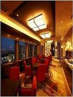
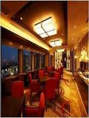

เดิน 5 นาทีจากทางออกทางตะวันตกของสถานีชินจูกุ! การเข้าถึงจากโตเกียวฮาเนดะและแต่ละสถานที่แตกต่าง ไม่เพียง แต่โตเกียว, ชินจูกุเป็นศูนย์กลางของธุรกิจและการท่องเที่ยวในนามของญี่ปุ่น ตั้งอยู่ในใจกลางชินจูกุโรงแรมเคโอพลาซ่า, เดิน 5 นาทีจาก "ชินจูกุสถานีรถไฟ JR" ออกจากเวสต์นั้นจะอยู่หนึ่งนาทีเดินสะดวกจาก "สถานีเตย Oedo สาย Tochomae"
 
